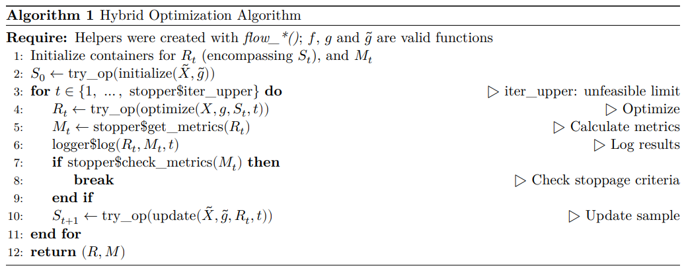

Introduction
In this article, I present the motivation and the theoretical framework behind the phyopt package. See also the vignette("example", package = "phyopt") article for a practical example and an implementation explanation of the algorithm.
There is a literature on the use of hybrid optimization methods that use two stages to first deal with complex aspects of the problem and then solve the remaining simpler problem with more efficient methods.
I focus on hybrid methods with a random first step, as they provide space for custom operators, possibly based on heuristics. This flexibility is important to solve non-standard problems.
I’ll start by describing the problems of interest and rewriting all of them in the same language in section Section 2. With this general framing, I’ll describe the method’s design in section Section 3, and the essence of its coding implementation in Section 4.
Theoretical Framework
Considered Problems and Examples
I’ll consider three types of ‘bad behaviors’: non-real variable domains (integer, categorical, etc.); variables that affect the objective or constraints functions in a complex (non-linear) way; and endogenous structure – problems where the structure of the problem is part of the optimization choice (e.g., the objective function or its domain can be chosen).
Different Natures of Variables
Also consider variables with separable characteristics: some imply a clear global optimum and others don’t – \((x + \sin(2y))\); or where some are convex and others aren’t – \((x^2 + \text{floor}(x)^2)\); or some have ‘difficult’ constraints and others don’t.
I use examples from economics, but the context does not really matter; the mathematical characteristics that are important.
Non Real-Valued Variables
Consider a central planner choosing lump-sum taxes \(\tau\) to maximize some social welfare function. The higher the tax, the higher the government’s utility, and smaller the population’s \(i \in \{1, 2, \dots, N\}\).
\[ \begin{array}{lr} \max_{\tau} u(\tau) = U_G(\tau) + \sum_{i = 1}^N U_P^i(\tau), & u: \mathbb{R}^+ \to \mathbb{R} \end{array} \]
Let’s add difficulty in steps. Considering the discrete nature of money, we have a mixed-integer problem:
\[ \begin{array}{lr} \max_{\tau} u(\tau) = U_G(\tau) + \sum_{i = 1}^N U_P^i(\tau), & u: [0.01, 0.02, \dots] \to \mathbb{R} \end{array} \]
Suppose the government can choose different taxes \(\tau_s\) given each person’s group \(s_i \in \{A, B\}\). Then, our problem is now mixed with a categorical variable:
\[ \begin{array}{lr} \max_{\tau, s} u(\tau, s) = U_G(\tau, s) + \sum_{i = 1}^N U_P^i(\tau_i(s_i)), & u: (\mathbb{R}^+)^2 \times \{A, B\}^N \to \mathbb{R}\\ \tau_i(s_i) = I\{s_i = A\}\tau_A + I\{s_i = B\}\tau_B & \end{array} \]
Endogenous Structure
What if the central planner, before choosing \(\tau\), must commit to it being in some interval \([\underline{\tau}, \underline{\tau} + c]\), \(c \in \mathbb{R}\)? Or perhaps the number of groups can be chosen, such that \(s \in \{A, B\}\) or \(\{A, B, C\}\), …?
\[ \begin{array}{lr} \max_{\tau, S, \mathcal{S}} u(\tau, S) = U_G(\tau, S) + \sum_{i = 1}^N U_P^i(\tau_i(S_i)), & u: (\mathbb{R}^+)^2 \times \mathcal{S}^N \to \mathbb{R}\\ \max_{\tau, \underline{\tau}} u(\tau), & u: [\underline{\tau}, \underline{\tau} + c] \to \mathbb{R} \end{array} \]
Additionally, consider the researcher’s problem: they have data on \(\tau\) and \(u(\tau; \theta)\) and want to estimate some parameter \(\theta\) by minimizing some loss function \(L(\theta; y - u(\tau; \theta))\). They do not know the scale of the abstract parameter \(\theta\) but must choose a domain for their computational method.
\[ \begin{array}{lr} \min_{\theta, \Theta} L(\theta; y - u(\tau; \theta)), & L: \Theta \to \mathbb{R} \end{array} \]
While this formulation could be interesting, it is not fundamentally different from using a general domain and creating a new constraint \(x \in \{\underline{\tau}, \underline{\tau} + c\}\). Similar manipulations could be done if the endogeneity of the structure were in a set of objective function options.
Reframing the Problems
Consider below the general problem of optimizing a real-value function, with possibly non-real domain. I’ll show alterations that can be done to transform it into a generalist problem, aligned with hybrid methods.
\[ \begin{array}{lr} \max_{x, X} f(x) ~~s.t.~~ g(x) \geq 0, & f: X \to \mathbb{R}^n,~ g: X \to \mathbb{R}^m,~ X \in \mathcal{X} \end{array} \]
Where: the domain is endogenous with options in \(\mathcal{X}\); \(n, m \in \mathbb{N}\) are the dimensions of the result and constraints, respectively; the restrictions can be irrelevant \(g(x) = 0\); and not all dimensions of \(x\) need to be used in both \(f\) and \(g\).
First, note that we can always separate, from the full \(x\), the variables \(\tilde{x}\) to be worked only on the first step. If some constraints depend only on \(\tilde{x}\), we can separate them into \(\tilde{g}(\tilde{x})\).
Additionally, we can map the domain options \(\mathcal{X}\) into a set of indexes \(\tilde{X}\). Then, we can rewrite our problem as choosing the index:
\[ \begin{array}{lr} \max_{x, \tilde{x}} f(x) ~~s.t.~~ g(x) \geq 0, & f: X_{\tilde{x}} \to \mathbb{R}^n,~ g: X_{\tilde{x}} \to \mathbb{R}^{m},~ \tilde{x} \in \tilde{X} \end{array} \]
Based on the equivalence below, we can change the domain options \(\mathcal{X}\) into restriction options \(H_{\mathcal{X}}\). Then, we can trade the domain choosing for the constraint \(g_{m+1}\):
\[ \begin{array}{c} x \in X ~~\Leftrightarrow~~ h(x) \geq 0,~ h: X = \{x: h(x) \geq 0\}\\ H_{\mathcal{X}} = \{h_{\tilde{x}}: X = \{x: h_{\tilde{x}}(x) \geq 0\},~ X \in \mathcal{X}\}\\ g_{m+1}(x, \tilde{x}) = \sum_{i \in \tilde{X}} I\{i = \tilde{x}\}h_{\tilde{x}}(x) \end{array} \]
Where if \(\mathcal{X}\) is uncountable, \(\tilde{X} \subseteq \mathbb{R}\) and we would use an integral.
After these manipulations, the reframed problem becomes:
\[ \begin{array}{lr} \max_{x, \tilde{x}} f(x, \tilde{x}) ~~s.t.~~ g(x, \tilde{x}) \geq 0,~ \tilde{g}(\tilde{x}) \geq 0, & f: X \to \mathbb{R}^n,~ g: X \times \tilde{X} \to \mathbb{R}^{m},~ \tilde{g}: \tilde{X} \to \mathbb{R}^{\tilde{m}} \end{array} \]
As \(X \subseteq \mathbb{R}^k\) is not open and \(g: X \rightarrow \mathbb{R}^m\) is not differentiable, KKT conditions are not satisfied. Thus, I’ll describe a method for such problems in the next section.
Method Design
First, define the number \(T \in \mathbb{N}\) of iterations (denoted by \(t\)) and the number \(N \in \mathbb{N}\) of samples (denoted by \(s\)) in each population \(S_t\). Denote this step by \(S_0 = \text{init}(\tilde{X}, \tilde{g})\).
First Step: Create Initial Sample of \(\tilde{x}\)
The first step is to create an initial population of the separated variables \(\tilde{x}\), \(S_0 = (\tilde{x}_s)_{s = 1}^N\). This population must be created to respect the constraints of \(\tilde{g}\). Denote this step by \(S_0 = \text{initialize}(\tilde{X}, \tilde{g})\).
There are several methods to create an initial sample. They generally can be divided into:
- Sampling \(\tilde{x}_s \sim P(.)\) from a distribution \(P: \tilde{X} \to [0,1]\).
- One can use the uniform distribution, or a heuristic guess based on knowledge of the problem, a-la importance sampling.
- Creating an even grid of points via some rule \(r\) \(\tilde{x}_s = \inf\{\tilde{X}\} + r(\tilde{X})\).
- Examples are grid sampling, Latin Hypercube sampling, Kronecker sampling, and Sobol or Halton sequences.
- Additionally, the domain can be split into groups and sampling done within each group (stratified/cluster-based sampling).
The main goal is to guarantee that the algorithm will be able to explore the whole domain. Kazimipour et. al. (2014) provides a comprehensive review of initialization methods.
Then, to guarantee validity of the \(\tilde{g}\) constraints, there are several methods:
- Rejecting or repairing samples that break the constraints.
- Using the closest valid point, some projection into the valid space, amongst others.
- Using heuristics to sample only from the valid space.
- Sampling each dimension of \(\tilde{x}_s\) at a time, updating the valid space of the rest each time; choosing a distribution \(P\) that is more likely to sample valid points; amongst others.
Note that if \(\tilde{x}\) contains encoded variables, as in the Researcher’s Problem, any heuristics used depend on how the encoding was done.
Second Step: Solve the Reduced Problem
Denote this step by \(R_t = \text{optimize}(X, g, t, S_t)\). For a given sample \(\tilde{x}_s\), what is left is the reduced problem, that doesn’t depend on \(\tilde{x}\) nor \(\tilde{g}\):
\[ \begin{array}{lr} \max_{x} f_s(x;~ \tilde{x}_s) ~~s.t.~~ g_s(x;~ \tilde{x}_s) \geq 0, & f: X \to \mathbb{R}^n,~ g: X \to \mathbb{R}^m \end{array} \]
One chooses the solver of their liking to this problem. One can also choose several options, that get randomly picked for each sample, which helps with generality of the solution.
Then, for each \(\tilde{x}_s \in S_t\), the problem is solved into \(x_s^*\), and an ordered set of the results - and optional meta-information \(I_s\) (e.g.: time to completion) - are stored:
\[ \begin{array}{lr} O_s = (\tilde{x}_s,~ x^*_s,~ f(x^*_s, \tilde{x}_s),~ I_s), & R_t = (O_s)_{s = 1}^N \end{array} \]
A set of metrics \(M_t\) is calculated from \(R_t\). Then the stopping criteria can be drawn from a combination of options. On top of maximum time elapsed or iterations, one can consider the best/median/other sample value \((\tilde{x}, x)\) or performance \(f((\tilde{x}, x))\) (denote by \(o\)), via: threshold \(o \gtrless k\); convergence \(|o_{t'} - o_t| < \epsilon\); or stability \(sd(o) < \epsilon\). Let \(R = (R_t)_{t = 1}^T\) and \(M = (M_t)_{t = 1}^T\).
Third Step: Update the Sample
The last step is to update the sample: \(S_{t+1} = \text{update}(\tilde{X}, \tilde{g}, t, S_t, R_t)\). The general objective is to create a new population in the “direction” of the best performing samples in \(S_t\). There are many literatures that motivate \(\text{update}\) operators, and it will be user-supplied in the coding implementation, such that the setup can encompass many options.
For the present explanation, I’ll focus on operators that are more easily applied to numeric problems in economics, mainly related to the Evolutionary Algorithms literature. Consider the option of combining random tuples of samples (“crossover”), and then adding some randomization, to avoid local optima (“mutation”). In simplistic terms, a ‘child’ sample is created by:
- Position crossover: taking some positions/dimensions from each of the ‘parents’, randomly.
- Arithmetic crossover: combining the parents’ values, with averages or else.
- Distributional crossover: sampling from a distribution based on the parents’ values.
- Resample mutation: randomly choosing a dimension to resample from its distribution.
- Noise mutation: randomly choosing a dimension to add noise.
- The amount of crossover and mutation, amongst others, can be hyperparameters, which can even depend on the iteration \(t\).
Again, not remotely an exhaustive list. More on crossover and mutation can be found in Kora and Yadlapalli (2017), De Falco et. al. (2002), but many other random optimization literatures can be considered.
Note that these operators need to account for possibly non-real or non-numeric variables, and also for the constraints \(\tilde{g}\). The flexibility of being able to define the operator is a major advantage of the method.
Coding Implementation
It is unfeasible to explain all the details of the implementation here, but all is explained in the package’s documentation.
The main function is optimize_phy(). It, and all others, have documentation pages with the same math notation as here, and with similar argument names (e.g.: xtil for \(\tilde{x}\) and x_dom for \(X\)). The function receives the main arguments:
- The functions
f,g,gtil, which must receive the correct argumentsxand/orxtil. - The domains
x_dom,xtil_dom, lists with length \(m\) and \(\tilde{m}\). Will be used by the user-supplied operators and their elements can be whatever the user needs. - The operators
initializer,optimizer, andupdater, which must receive the arguments described in the previous section, and return an output in a specific format. - The helper
stopper, that calculates metrics of the performance at each iteration, and sets the stopping criteria; andlogger, that logs the performance to the console for user feedback. They are created by the helper functionsflow_stopper()andflow_logger().
The algorithm is presented below. The user-provided function calls are wrapped in the try_op function to catch and report errors in a user-friendly way. The notation x\$y indicates an object \(y\) within an object \(x\).

It is very important to read the “Using the Phy Algorithm” vignette vignette("example", package = "phyopt"), which thoroughly explains the package logic and usage. At its core, the package wraps the operators into a two-step hybrid procedure. The user is responsible for making smart choices for these operators, but the package guarantees (i) thorough tests and error handling to help debugging, and (ii) a flexible, generalist, agnostic setup that does not restrict the user. The tricks to allow (i) any size of \(m\) and \(\tilde{m}\); (ii) any kind of operator; and (iii) any kind of metric \(M_t\) and stopping criteria are especially important.